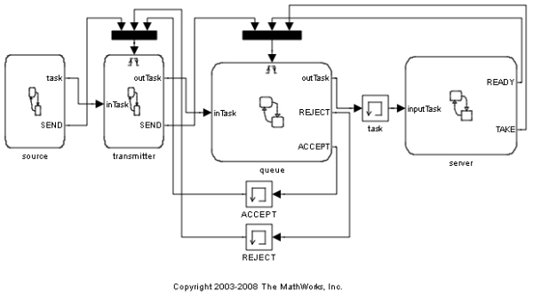
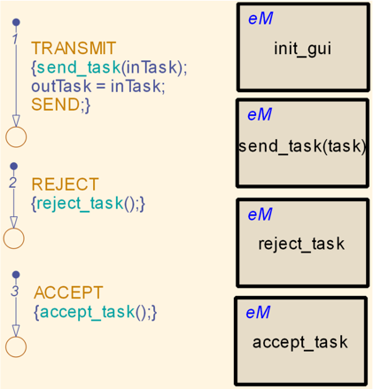

Server Queueing System
This demonstration simulates a queueing system for a server processing tasks. There are four Stateflow® charts involved in the process: 1) The Source produces tasks that are weighted 1 to 5. Tasks take an amount of time proportional to their weight. 2) The Transmitter takes a signal from the source and sends it to the Queue. It shows the weight of the task on the left of the display in blue. It waits for either an ACCEPT or REJECT notification from the Queue. It releases the task to the Queue upon an ACCEPT. It marks the task as dropped (red) upon a REJECT. 3) The Queue receives tasks from the Transmitter. If there is room in the Queue, it queues the task for the Server. If there is no room, the Queue overflows, and it rejects the task. The tasks in the Queue are shown in the black boxes in the display. 4) The Server polls the Queue for tasks. If the Queue has an task waiting, the Server takes the task and processes it. The task that is processing is shown in black on the right of the display. The Server remains busy for the amount of time the task takes, and then goes back to polling the Queue.
 